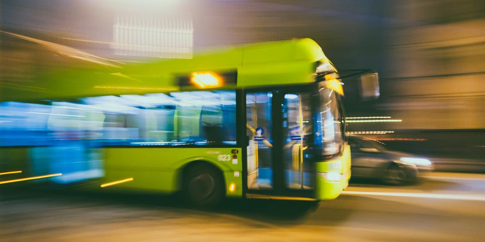
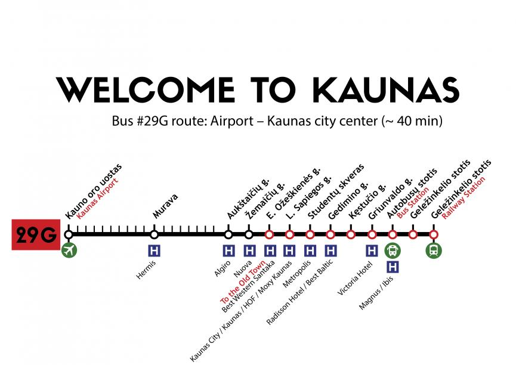

Buses and trolleybuses. There are two types of tickets: A single use paper ticket and E-ticket (monthly, 92-day pass, 365-day pass or 1095-day pass). Trolleybuses and buses run from 4.30 a.m. until 10.30 p.m. Payments for Kaunas city public transport are made with the help of non-contact electronic ticket (CARD) system. You may transfer different sums of money from your e-purse onto the CARD and/or pay for certain kinds of e-ticket periodically. You may buy the CARD at the newspaper stands or in the places marked by the special sign “Kauno Viešasis Transportas” (KVT) (Kaunas Public Transport). You must always have your card when getting on the means of transport. Kaunas was first mentioned in annals in 1361, when the German Order was getting ready for an attack on Kaunas Castle. The history of Kaunas as a city, however, started in 1408, when Grand Duke Vytautas granted its citizens the privilege of self-government based on Magdeburg Law. Thus the community of free and economically-independent merchants and craftsmen was legalised, responsible directly to the ruler. Vytautas ceded Kaunas the right to own the scales, wax processing, and woolen cloth trimming facilities. The scales were used for weighing the goods brought to the city or packed on site, the wax manufactury checked the quality of wax and prepared it for export by moulding it into fixed-size pieces, while the wool trimming workshop was meant for finishing fabrics. Those were profitable, monopolistic enterprises. 

Kaunas International Airport (Karmelava) – is located 15 km northeast of Kaunas City. Bus No. 29G
regularly runs from the airport terminal to the city centre. If you come to Kaunas late in the evening,
for your convenience the bus No. 29G will wait for you and take you to Kaunas. Every day the bus from
Kaunas Airport only leaves after the last plane lands. Useful information: Please buy a ticket from the
driver immediately after boarding the vehicle. Please be prepared to pay the exact amount of money – 1
Eur. Paper tickets purchased from the driver must not be validated using ticket punchers. You can find
bus No. 29G routes and timetables.
Taxis are available and the price to the city centre is about 20-25 EUR. Taxis can be found and hired
directly from outside the airport terminal building.
TAXIS: can be hailed on the streets, called by phone or using a mobile App.